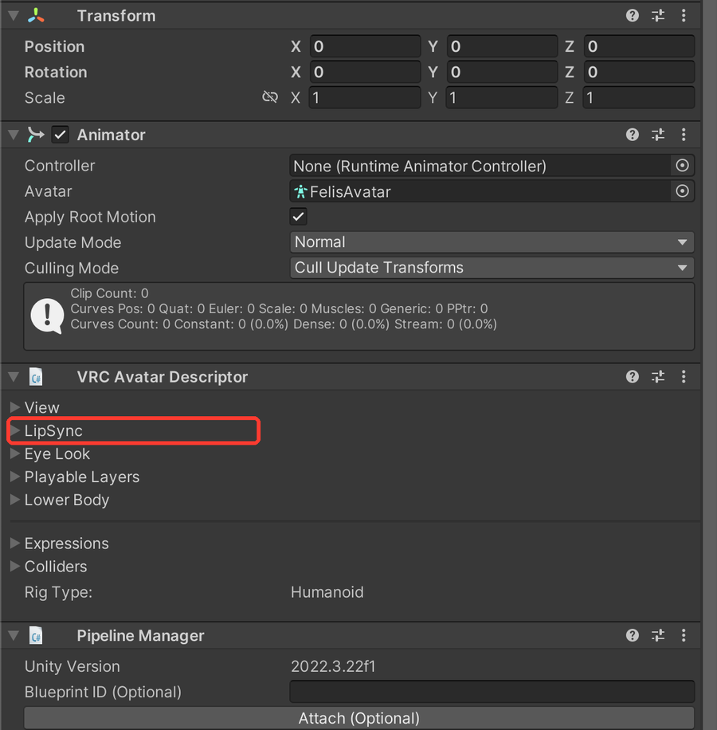

VRChat lip sync not working (mouth not moving when you talk) - visemes and expression fix
Quick fix
- On the Avatar Descriptor, open Lip Sync and press Auto Detect (or set Viseme Blend Shape and pick each viseme)
- If only the expression breaks it, open the expression animation (.anim) and look for blendshapes starting with vrc.v_

Want it checked automatically? Avatar Setup Doctor checks your parameters and animator layers in one click - free version. Try it free
What you see on screen:
(No error message - the mouth doesn't move when you talk, or stops only while an expression is on)
What it means
Lip sync needs the Avatar Descriptor's Lip Sync mode and visemes set up (Viseme Blend Shape is the recommended mode). If it works normally but stops while an expression is on, the expression animation also drives the lip sync blendshapes (vrc.v_aa, etc.) and holds the mouth shape.
Common causes
- Lip Sync mode isn't set, or the visemes aren't assigned on the Avatar Descriptor
- The SIL viseme shape was empty and Unity removed it on import
- You made an expression that includes a mouth shape
- An expression set or gimmick animation includes vrc.v_ blendshapes
How to fix it
- On the Avatar Descriptor, open Lip Sync and press Auto Detect (or set Viseme Blend Shape and pick each viseme)
- If only the expression breaks it, open the expression animation (.anim) and look for blendshapes starting with vrc.v_
- If found, rebuild it with a mouth shape that isn't a lip sync viseme (or delete that row)
- If you want lip sync to win while talking, move the mouth part to a separate layer
Before you change anything, make a full copy of your project folder so you can go back.
Fix this automaticallyAvatar Setup Doctor adds a window to Unity. Press Diagnose and it lists what's wrong with your avatar project, why, and how to fix it - the paid version fixes many issues in one click. Free version available.
For this problem, it lists expressions that drive lip sync blendshapes.
Get Avatar Setup Doctor (Free version available)
For this problem, it lists expressions that drive lip sync blendshapes.
Get Avatar Setup Doctor (Free version available)